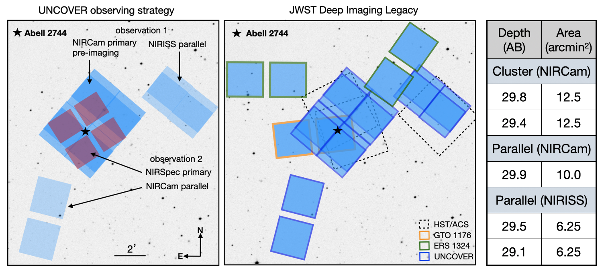

Survey Overview

UNCOVER official program info
UNCOVER is a JWST Cycle 1 public Treasury survey that will obtain deep NIRCam multiband imaging and ultradeep low-resolution NIRSpec/PRISM spectroscopy of the Frontier Field Abell 2744.
Thanks to the strong lensing boost and the deep observations, UNCOVER will be uniquely positioned to address two core JWST science goals: identifying first-light galaxies at z>10, and characterizing the ultra-low luminosity galaxies that drive reionization at z~6-7. Other science enabled by UNCOVER include stellar mass complete studies to z~10; probing the role of dust at high redshift; and the various pathways of quenching star formation out to early times.
Deep NIRCam / 7 filters 1-5 microns to ~30AB
Ultradeep NIRSpec/PRISM R~100 from 0.6-5 um spectroscopy to ~29AB
Science

51hr primary / 49hr parallel (71 hours with overheads)
Deep NIRCam (4-6 hours) / 7 filters 1-5 microns to ~30AB (F115W, F150W, F200W, F227W, F356W, F410M, F444W)
Ultradeep NIRSpec/PRISM R~30-300 from 0.6-5 microns spectroscopy to ~29AB (up to 20 hours/object)
First Galaxies
The integrated star formation history is barely constrained at z≳8, and very few galaxies at z>10 are currently known. The deep UNCOVER imaging (to 30AB) and spectra (continuum to 29AB) will enable us to constrain the physical properties of these first-light galaxies, including their star formation efficiency.
Reionization
Current studies disagree about the faint end slope of the z~6 UV luminosity function. The deep and high spatial resolution observations from UNCOVER will resolve this question through detailed constraints on the faint end slope. Additionally, UNCOVER spectra of faint Lyman Break Galaxies will constrain the ionizing photon production rate and the escape fraction at the epoch of reionization.
Mass complete studies out to z~10
A key test for galaxy formation models is the evolution of the stellar mass function, but probing the faint end slope at high redshift requires ultra-deep data. With UNCOVER, we will be able to probe the full stellar mass function out to z=10, which will place constraints on the stellar mass-halo mass relation and thus the overall efficiency of galaxy formation.
Quenching to low mass and high redshift
At low redshift, satellite quenching leads to an upturn in the quiescent galaxy number density distribution. Current HST/Spitzer observations are not deep enough to probe whether this upturn is also in place at higher redshifts, as might be expected from the old (≳7 Gyr) ages for dwarf ellipticals in the local Universe. The deep UNCOVER imaging and spectra will allow us to identify and characterize quiescent satellites as soon as they emerge, enabling a full picture of satellite quenching over cosmic time.
Dusty galaxies at z>4
Though dusty star-formation dominates the SFR density below z~2, dust is not expected to play a large role at earlier times. However, dusty star formation is not well constrained at z>3. UNCOVER will detect any obscured galaxy with mass >109 M☉ out to z=9, if they exist, and can spectroscopically confirm this population to 28 AB mag.